컴퓨터응용가공산업기사 (2003-05-25 기출문제)
1과목: 기계가공법 및 안전관리
1. 전해연마의 장점이 아닌 것은?
- 절삭 또는 연삭된 표면의 조도를 높인다.
- 복잡한 면의 정밀가공이 가능하다.
- 가공에 의한 표면균열이 생기지 않는다.
- 전류밀도가 클수록 표면이 깨끗하다.
(정답률: 45%)

2. 파텐팅(patenting) 열처리를 옳게 나타낸 것은?
- 냉간 가공전에 시행하는 항온 변태 처리이다.
- 냉간 가공후에 시행하는 계단 담금질이다.
- 펄라이트 조직을 안정화 시키는 처리이다.
- 미세한 오스테나이트 조직을 주는 처리이다.
(정답률: 49%)
3. 플레이너(Planer)의 급속귀환 운동에 부적당한 기구는?
- 유압 기구
- 크랭크 장치
- 랙과 피니언
- 웜과 웜기어
(정답률: 36%)
4. 목형 제작에서 주물자(shrinkage scale)를 사용하는 이유는?
- 주형을 만들 때 흙이 줄기 때문에
- 쇳물이 굳을 때 줄기 때문에
- 주형을 뽑을 때 움직이기 때문에
- 나무가 줄기 때문에
(정답률: 70%)
5. 주절삭력 150kgf, 절삭속도 50m/min 일때, 절삭마력은 몇 PS인가?
- 7.67
- 5.67
- 3.67
- 1.67
(정답률: 28%)
6. 선반(lathe)과 유사한 구조의 용접기로 접합면에 압력을 가한 상태로 상대적인 회전을 시키는 압접방법은?
- 로울용접(roll welding)
- 확산용접(diffusion welding)
- 냉간압접(cold welding)
- 마찰용접(friction welding)
(정답률: 56%)
7. 주물사의 구비 조건으로 틀린 것은?
- 양호한 열전도성
- 성형성
- 내화성
- 통기성
(정답률: 52%)
8. 구성인선의 발생을 억제하는데 효과가 있는 방법 중 틀린 것은?
- 절삭속도의 증대
- 절삭깊이의 감소
- 공구상면 경사각의 증대
- 칩 두께의 증가
(정답률: 78%)
9. 단조종료 온도에 관한 설명으로 옳지 않은 것은?
- 단조온도가 낮으면(재결정온도 이하) 가공경화되어 내부에 변형이 남을 때가 있다.
- 재결정 온도이상에서는 경화되어도 재결정 현상으로 연화되므로 경화되지 않은 것과 같은 결과가 된다.
- 단조에 적합한 온도의 재결정 온도와 융점과의 사이에 있고 온도가 높을수록 변형저항이 작아 가공이 용이하다.
- 단조 종료온도가 높으면 결정이 미세화되고 기계적 성질이 좋아 열처리할 필요가 없다.
(정답률: 55%)
10. 일반적으로 줄(file)의 종류를 단면형상에 따라 분류할때 해당되지 않는 것은?
- 원형 줄
- I형 줄
- 반원형 줄
- 평형 줄
(정답률: 53%)
11. 강재의 표면경화방법 중에서 암모니아 가스를 이용하는 것은?
- 화염 열처리
- 고주파 열처리
- 염욕로 침탄법
- 질화법
(정답률: 70%)
12. 기계조립 작업시 작업순서를 열거하였다. 공구를 사용하는 순서가 맞는 것은?
- 줄 - 스크레이퍼 - 쇠톱 - 정
- 쇠톱 - 스크레이퍼 - 정 - 줄
- 줄 - 쇠톱 - 스크레이퍼 - 정
- 쇠톱 - 정 - 줄 - 스크레이퍼
(정답률: 63%)
13. 소성가공에서 냉간가공과 열간가공을 구분하는 것은?
- 변태온도
- 단조온도
- 담금질온도
- 재결정온도
(정답률: 79%)
14. 단조작업에서 소재를 축방향으로 압축하여 길이를 짧게 하는 작업의 명칭은?
- 늘이기(drawing)
- 업세팅(upsetting)
- 넓히기(spreading)
- 단짓기(setting down)
(정답률: 50%)
15. 스크레이핑(scraping)작업에 사용되는 스크레이퍼의 종류 중 틀린 것은?
- 평 스크레이퍼 (flat scraper)
- 훅 스크레이퍼 (hook scraper)
- 칼날형 스크레이퍼
- 반원형 스크레이퍼
(정답률: 50%)
16. 버니어 캘리퍼스(Vernier Calipers)의 어미자에 새겨진 0.5㎜의 24눈금(12㎜)으로 아들자를 25등분 할 때, 어미자와 아들자의 1눈금의 차는 얼마인가?
- 1/20㎜
- 1/24㎜
- 1/50㎜
- 1/25㎜
(정답률: 47%)
17. 열간단조(hot forging) 작업에 해당되는 것은?
- 업셋 단조(upset forging)
- 코울드 헤딩(cold heading)
- 코이닝(coining)
- 스웨이징(swaging)
(정답률: 51%)
18. 자전거에 쓰이는 프레임용 파이프를 제작하는 방법은?
- 경납땜(brazing)
- 맞대기 심 용접(butt seam welding)
- 레이저 빔 용접(laser beam welding)
- 테르밋 용접(thermit welding)
(정답률: 70%)
19. 정밀입자 가공에 해당하는 것은?
- 방전가공(EDM)
- 브로칭(boraching)
- 보링(boring)
- 액체 호닝(liquid honing)
(정답률: 68%)
20. 구멍용 한계 게이지가 아닌 것은?
- 봉 게이지
- 평형 플러그 게이지
- 스냅 게이지
- 판 플러그 게이지
(정답률: 47%)
2과목: 기계설계 및 기계재료
21. 지름 60㎜의 강축을 사용하여 250rpm으로 54㎰을 전달하는 묻힘키이(sunk key)의 길이는 다음중 어느 것인가? (단, 키이의 허용전단응력 τ = 4.6㎏f/mm2, 키이의 규격(폭 x 높이) b x h = 15㎜ x 12㎜이다.)
- 61.8㎜
- 74.7㎜
- 83.5㎜
- 93.4㎜
(정답률: 43%)
22. 특수 청동합금에 유동성을 좋게 하기 위해 첨가하는 원소는?
- 규소
- 망간
- 인
- 아연
(정답률: 32%)
23. 용선중에 포함된 불순물들을 산화 제거하여 강의 제조에 사용되는 로는?
- 용광로
- 용선로
- LD전로
- 변성로
(정답률: 29%)
24. 스프링 상수 2㎏f/㎜의 코일을 만들어 8㎏f의 무게를 달았다. 코일 소선은 2㎜의 피아노 선이고 코일의 유효 감김수 n = 8일때, 코일 스프링의 지름은 얼마인가? (단, G = 8 x 103 ㎏f/mm2이다.)
- 4㎜
- 5㎜
- 10㎜
- 18㎜
(정답률: 29%)
25. 롤러체인의 연결에서 링크의 수가 홀수일 때 사용하는 것은?
- 오프셋 링크
- 롤러 링크
- 부시
- 핀 링크
(정답률: 36%)
26. 볼베어링의 수명은?
- 하중의 3배에 비례한다.
- 하중의 3승에 비례한다.
- 하중의 3배에 반비례한다.
- 하중의 3승에 반비례한다.
(정답률: 43%)
27. Martensite의 경도에 크게 기여하는 요인이 아닌것은?
- 탄소원자의 석출
- 결정의 미세화
- 급냉으로 인한 내부응력
- 탄소원자에 의한 Fe격자의 강화
(정답률: 39%)
28. 다음 중 기계구조용 재료로 가장 많이 사용되는 2원합금 재료는 무엇인가?
- 알루미늄합금
- 고속도강
- 스테인리스강
- 탄소강
(정답률: 45%)
29. 단판(單板)원판 마찰 클러치에 축추력(軸推力) P=60(㎏f)가 작용할 때 전달할 수 있는 토오크 T(㎏f-mm)은 얼마인가? (단, 원판마찰 클러치의 바깥 반지름 r1=120(mm) 안쪽 반지름 r2=80(㎜),마찰면의 마찰계수 μ=0.1이다.)
- 1200
- 600
- 720
- 480
(정답률: 29%)
30. 고탄소 크롬강으로 열처리성과 내충격성이 높은 강은?
- STD1
- STC3
- SKH51
- SM15C
(정답률: 30%)
31. 웜기어에서 웜을 구동축으로 할때 웜의 줄수를 3, 웜 휘의 잇수를 60 이라고 하면 피동축인 웜휘일을 몇 분의1로 감속하는가?
- 1/15
- 1/20
- 1/25
- 1/180
(정답률: 75%)
32. 아연(Zn)의 설명이 잘못된 것은?
- 대기 중 표면에 염기성 탄산염(炭酸鹽)의 박막이 생겨 내부를 보호한다.
- 도금 및 합금으로도 많이 사용한다.
- 매우 단단한 금속으로 금형재로 사용된다.
- 4%의 Al을 합금하면 다이캐스팅용으로 유명한 자막(Zamak)이 된다.
(정답률: 49%)
33. 이원합금(二元合金)에서 공정반응을 일으킬 때의 자유도는?
- 0
- 1
- 2
- 3
(정답률: 45%)
34. 고온에서 다른 재료에 비해 강도가 우수하기 때문에 항공기 외판 등에 사용하는 재료는?
- Ni
- Cr
- W
- Ti
(정답률: 43%)
35. 베어링 계열이 60인 단열 깊은 홈 베어링의 호칭번호가 6⑤ 일 때 베어링의 안지름은 얼마인가?
- 5mm
- 10mm
- 15mm
- 25mm
(정답률: 32%)
36. 다음 앵글 밸브(angle valve)의 기능에 대한 설명중 틀린 것은?
- 유체의 유량 조절
- 유체의 방향 전환
- 유체의 흐름의 단속
- 유체의 에너지 유지
(정답률: 44%)
37. 직경 10mm인 강구를 사용하여 시험편에 500kg의 정하중으로 30초간 눌렸을 때 생기는 영구변형 깊이가 0.5mm이라면 재료의 브리넬 경도는?
- 31.8Kg/mm2
- 27.8Kg/mm2
- 35.7Kg/mm2
- 30.8Kg/mm2
(정답률: 36%)
38. 특수원소를 탄소강에 첨가할 경우 담금성 향상 효과가 큰것부터 배열된 항은?
- Cr, Mn, Cu, Ni
- Ni, Cu, Cr, Mn
- Mn, Cr, Ni, Cu
- Ni, Mn, Cr, Cu
(정답률: 35%)
39. 리베팅 후의 리벳지름 또는 구멍의 지름 d[㎜], 리벳의 전단응력τ[㎏f/mm2], 리벳 또는 강판의 압축응력σc[㎏f/mm2] 인 겹치기 리벳이음에서 전단저항과 압축저항을 같도록 하면 강판의 두께 t[㎜] 를 구하는 식으로 옳은 것은? (단, 리벳의 길이 방향에 직각 방향으로 인장력 W[㎏f]이 작용한다.)
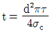
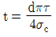
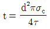
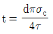
(정답률: 27%)
40. 원통커플링에서 원통을 졸라매는 힘을 P라 하면 이 마찰 커플링의 전달 토크는? (단, μ 마찰계수, 축의 지름을 d,커플링의 길이를 L로 한다.)
- T = μπPd
- T = 2μPd
- T =μπPdL/2
- T =μπPd/2
(정답률: 26%)
3과목: 컴퓨터응용가공
41. 구멍
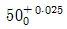
/축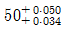
로 기입된 끼워맞춤에서 최소 죔새는 얼마인가?- 0.009
- 0.025
- 0.034
- 0.⑤0
(정답률: 52%)
42. 다음 중 1각법과 3각법을 비교 설명한 것으로 틀린 것은?
- 1각법은 평면도를 정면도의 바로 아래에 나타낸다.
- 3각법에서 측면도는 오른쪽에서 본 것을 정면도의 바로 오른쪽에 나타낸다.
- 1각법에서는 정면도 아래에서 본 저면도를 정면도 아래에 나타낸다.
- 3각법에서는 저면도는 정면도의 아래에 나타낸다.
(정답률: 59%)
43. 다음 회전도시 단면도의 설명 중 틀린 것은?
- 핸들, 림, 리브등의 절단면은 45° 회전하여 표시한다.
- 절단한 곳의 전.후를 끊어서 그 사이에 그릴 수 있다.
- 절단선의 연장선 위에 그린다.
- 도형 내의 절단한 곳에 겹쳐서 가는실선으로 그린다.
(정답률: 37%)
44. CAD에 쓰이는 그래픽 터미널 중 전자빔의 주사 방법은 텔레비젼과 같으며 도형의 유무에 관계없이 항상 수평 방향으로 주사시켜 상을 형성하는 방식은?
- Raster-Scan
- Direct-View Storage Tube
- Reflesh-Scan
- Random Scan
(정답률: 39%)
45. 다음 출력장치 중 래스터 스캔(raster scan) 방식이 아닌 것은?
- 잉크제트 프린트(inkjet print)
- 레이저 프린터(laser printer)
- 펜 플로터(X-Y plotter)
- 정전식 플로터(electrostatic plotter)
(정답률: 52%)
46. 다음 중 CPU의 처리속도를 나타내는 것은?
- BPI
- MIPS
- CPS
- BPS
(정답률: 20%)
47. 다음 중 실선으로 표시하지 않는 것은?
- 물체의 보이는 윤곽
- 치수
- 해칭
- 표면 처리부분
(정답률: 47%)
48. 다음 A, B 행렬의 곱 AB의 결과는? (단,
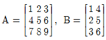
)- 3행 3열
- 2행 2열
- 3행 2열
- 2행 3열
(정답률: 47%)
49. 다음 타원의 도형 정의가 아닌 것은?
- 축과 편심에 의한 타원
- 중심과 두 축에 의한 타원
- 아이소매트릭 상태에서 그리는 방법
- 세 개의 접할 도형요소
(정답률: 33%)
50. 미국의 표준코드로 컴퓨터와 주변장치간의 데이타 입출력에 주로 사용하는 데이타 표현방식은?
- DECIMAL
- BCD
- EBCDIC
- ASCII
(정답률: 47%)
51. CAD 프로그램에서 주로 곡선을 표현할 때 많이 사용하는 방정식의 형태는?
- Explicit 형태
- Implicit 형태
- Hybrid 형태
- Parametric 형태
(정답률: 73%)
52. 래스터 스캔 디스플레이 장치를 운영하기 위해서는 음극선을 브라운관 후면에 주사하여야 한다. 이러한 현상을 refresh 한다고 하는데, 이 refresh 현상으로 발생하는 또다른 현상은?
- Flicker 현상
- Shadow mask 현상
- Frame 현상
- Cache 현상
(정답률: 43%)
53. 출도 후 도면 내용을 정정했을 때 틀린 것은?
- 변경한 곳에 적당한 기호(△)를 부기한다.
- 변경된 도형, 치수는 지운다.
- 변경 년월일, 이유 등을 명기한다.
- 변경된 치수는 한 줄로 긋고 그대로 둔다.
(정답률: 46%)
54. 다음 중 평면도에 해당하는 것은?
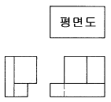
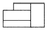
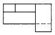
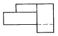
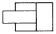
(정답률: 39%)
55. 도형의 표시 방법에 대한 설명 중 틀린 것은?
- 둥근 막대 모양은 세워서 나타낸다.
- 정면도는 대상물의 모양· 기능을 가장 명확하게 표시하는 면을 그린다.
- 그림의 일부를 도시하는 것으로 충분한 경우에는, 그 필요한 부분만을 부분 투상도로서 표시한다.
- 특정 부분의 도형이 작은 까닭으로 그 부분의 상세한 도시나 치수 기입을 할 수 없을 때는 그 부분을 가는 실선으로 에워싸고, 영자의 대문자로 표시함과 동시에 그 해당 부분을 다른장소에 확대하여 그린다.
(정답률: 63%)
56. 대상물체를 x축으로 90° 회전시킨 후 x축으로 3, y축으로 2, z축으로 5만큼 이동시키면 물체 위의 점 [2, 3, 4]는 어느 점으로 옮겨 가는가?
- [5, 5, 9]
- [5, 6, 2]
- [5, -2, 8]
- [5, -5, 2]
(정답률: 20%)
57. 축의 도시방법을 바르게 설명한 것은?
- 긴축의 중간을 파단하여 짧게 그리되 치수는 실제의 길이를 기입한다.
- 축끝의 모따기는 각도와 폭을 기입하되 60° 모따기인 경우에 한하여 치수 앞에 "C"를 기입한다.
- 둥근 축이나 구멍 등의 일부면이 평면임을 나타낼 경우에는 굵은 실선의 대각선을 그어 표시한다.
- 축에 있는 널링(knurling)의 도시는 빗줄인 경우 축선에 대하여 45° 로 엇갈리게 그린다.
(정답률: 36%)
58. 용접부의 도시법에 대한 설명 중 틀린 것은?
- 설명선은 기선, 화살, 꼬리로 구성되고 기선은 필요 없으면 생략해도 좋다.
- 화살표는 필요하다면 기선의 한쪽 끝에 2개 이상을 붙일 수 있다.
- 기선은 보통 수평선으로 하고, 기선의 한쪽 끝에는 화살표를 붙인다.
- 화살표는 기선에 대하여 되도록 60° 의 직선으로 한다.
(정답률: 32%)
59. 최대허용치수가 100.004㎜, 최소허용치수가 99.995 ㎜이면 치수공차는 얼마인가?
- 0.001
- 0.004
- 0.0⑤
- 0.009
(정답률: 75%)
60. 다음은 CAD 소프트웨어가 갖추어야 할 기능들이다. 가장 관계가 먼것은?
- 응용 프로그램 기능
- 데이터 변환 기능
- 세그 먼트 기능
- 그래픽 요소 생성 기능
(정답률: 31%)
4과목: 기계제도 및 CNC공작법
61. 방전가공시 전극 중량 소모비를 나타낸 것은?
- 중량소모비=전극소모량/피가공체의 가공길이x100
- 중량소모비=전극소모량/피가공체의 가공체적x100
- 중량소모비=피가공물의 두께/피가공체의 가공길이x100
- 중량소모비=전극소모량/피가공체의 제거량x100
(정답률: 30%)
62. 다음 중 방전 가공시 공작물을 예비가공 하는 이유는?
- 휴지시간을 많이 설정할 수 있다.
- 방전가공을 하고자 하는 부분이 작아져서 방전가공 시간이 단축된다.
- 전극의 소모를 증대함으로써 방전을 안정시킨다.
- 극간을 흐르는 가공칩의 양이 많아져 가공시간이 단축된다.
(정답률: 54%)
63. 기본 이송단위(BLU)가 0.01㎜인 CNC시스템에서 MCU(기계제어장치)는 X,Y 두 축의 움직임을 제어한다. 만약 MCU 내의 펄스 발생기가 10초 동안에 X축으로 12000펄스를 Y축으로 16000펄스를 동시에 발생하여 보낸다면 실제 경로를 따라서 움직인 이송속도(㎜/sec)는?
- 200
- 20
- 120
- 12
(정답률: 35%)
64. 기계를 장시간 사용하면 백래시가 발생된다. 이런 백래시를 무시하고 정밀하게 위치를 결정하기 위해 드릴가공이나 보링가공을 할 때 사용하는 한 방향 위치결정 워드는 무엇인가?
- G50
- G60
- G70
- G80
(정답률: 24%)
65. 다음 머시닝센터 프로그램에서 N03 블록의 가공시간은?
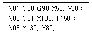
- 14초
- 17초
- 21초
- 25초
(정답률: 35%)
66. CAD 모델을 여러 개의 단층으로 나누어 층 하나 하나를 마치 피라미드를 쌓아올리는 방식으로 시제품을 만드는 가공방식을 무엇이라고 부르는가?
- 역공학
- Rapid prototyping
- NC 가공
- Digital Mock-Up
(정답률: 55%)
67. NC공작기계의 절삭 제어방식중 드릴링(drilling) 작업에 적절한 제어방식은?
- 위치결정제어
- 직선절삭제어
- 원호절삭제어
- 윤곽절삭제어
(정답률: 68%)
68. CAD/CAM 시스템에서 모델을 표현하는 방식 중 2.5차원에 대한 설명으로 틀린 것은?
- 초기 NC기계가 동시 3축이 안되고 3축기계이지만 동시에 2축밖에 움직이지 않아서 생긴 말이다.
- 도면을 그리는 아이디어와 흡사하게 곡면을 형성할수 있기 때문에 곡면의 이해가 쉽다.
- 모든 형상정보를 x-y, y-z, z-x 평면에 관한 자료만 가지고 있는 경우로 도면제작에 많이 사용된다.
- 가공된 곡면은 면이 좋고 원호보간을 사용하므로 가공데이터(NC Code)가 짧다.
(정답률: 23%)
69. 솔리드 모델링 기법의 일종인 특징형상모델링기법의 성격에 대한 설명으로 맞지 않는 것은?
- 모델링 입력을 설계자 또는 제작자에게 익숙한 형상 단위로 하자는 것이다.
- 각각의 형상단위는 주요 치수를 파라메터로 입력하도록 되어있다.
- 모델링된 입체를 제작하는 단계의 공정계획에서 매우 유용하게 사용될 수 있다.
- 사용되는 사용분야와 사용자에 관계없이 특징형상의 종류가 항상 일정하다는 것이 장점이다.
(정답률: 53%)
70. CNC선반 가공 프로그램에서 G96 S120으로 지정된 경우 의미를 맞게 설명한 것은?
- 절삭속도가 120m/min가 되도록 공작물의 직경에 따라 주축의 회전수가 변화한다.
- 주축이 120 rpm 으로 회전하도록 한다.
- 주축의 최고 회전수가 120 rpm 이다.
- 주축속도가 120 rpm 이 되면 주축을 정지시키는 것을 의미한다.
(정답률: 58%)
71. 공작물의 외경이 100mm이고, 공작물과 공구와의 상대속도가 200m/min, 공작물의 1회전당 공구이송량이 0.1mm인 경우에 공구의 이송속도는 몇 mm/min 인가?
- 12
- 20
- 32
- 64
(정답률: 23%)
72. 곡면의 입력 데이터 자체가 오차를 갖고 있는 경우에 만들어진 곡면은 심한 굴곡을 갖게 되는데 이때 곡면의 곡률을 조정하여 원활한 곡면을 얻도록하는 기능은?
- Blending
- Smoothing
- Filleting
- Meshing
(정답률: 32%)
73. 컨트롤러의 정보처리 회로에서 서보기구로 보내는 신호의 형태는 무엇인가?
- 펄스
- 전류
- 주파수
- 전압
(정답률: 71%)
74. 와이어 프레임(wire frame)에 면(面), 체(體)의 정보를 추가하여 3차원 형상을 그 경계면으로 표현하는 방법인 경계 표현 방법(Boundary Representation)에 설명으로 틀린 것은?
- CSG에 비하여 데이터 구조가 복잡하다.
- CSG(Constructive Solid Geometry)에 의한 방법에 비하여 삼면도, 투시도의 작성이 용이하다.
- 점, 선, 면 등을 별개로 정의, 수정 및 소거할 경우 과오를 일으키기 쉽다.
- 내부 구조에 모순이 생겨도 발견하기 쉽다.
(정답률: 29%)
75. 다음과 같은 형태의 반지름 R인 원의 함수식을 올바르게 설명한 것은?
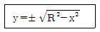
- 매개변수 음함수형태(implicit parametric)
- 매개변수 양함수형태(explict parametric)
- 비매개변수 음함수형태(implicit nonparametric)
- 비매개변수 양함수형태(explicit nonparametric)
(정답률: 28%)
76. 와이어프레임(Wireframe) 모델링 방법에 대한 설명 중 틀린 것은?
- x,y,z 좌표값을 입력할 수 있다.
- 구성된 모델의 표면적을 계산할 수 있다.
- 모델의 모서리(EDGE) 정보를 갖고 있다.
- 점과 선의 정보로 구성된다.
(정답률: 62%)
77. B-spline 곡선과 곡면을 다양하게 변형할 수 있는 Non-Uniform한 곡선을 무엇이라고 하는가?
- Bezier
- Spline
- NURBS
- Coons
(정답률: 59%)
78. 자유곡면의 CNC가공을 위하여 고려하여야 할 것이 아닌 것은?
- 공구간섭 방지
- 황삭계획 및 허용공차 지정
- 가공경로 계획
- 자재 수급 계획
(정답률: 68%)
79. 서보시스템 중 서보모터와 테이블 뒤에 위치 검출장치를 동시에 부착하여 정밀한 위치제어를 하는 제어방식은?
- 개방회로 제어방식
- 폐쇄회로 제어방식
- 반폐쇄회로 제어방식
- 하이브리드 제어방식
(정답률: 37%)
80. 다음 보조기능 중 절삭유 정지를 나타내는 것은?
- M01
- M⑤
- M09
- M19
(정답률: 75%)